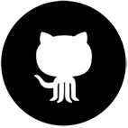
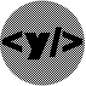

Projects GitHub LinkedIn Drawings  
My name is Yamal Cesar Al Mahamid Velez. I'm from Madrid, Spain and I'm graduated in Computer Science by the Universidad Complutense de Madrid. My interests are software development using languages such as Java, C++ or Javascript... and find and learn other new technologies. On the other hand, one of my favourite activities is illustration.
In this site you can go to my GitHub profile, where I update my projects, and also view some of my art work.